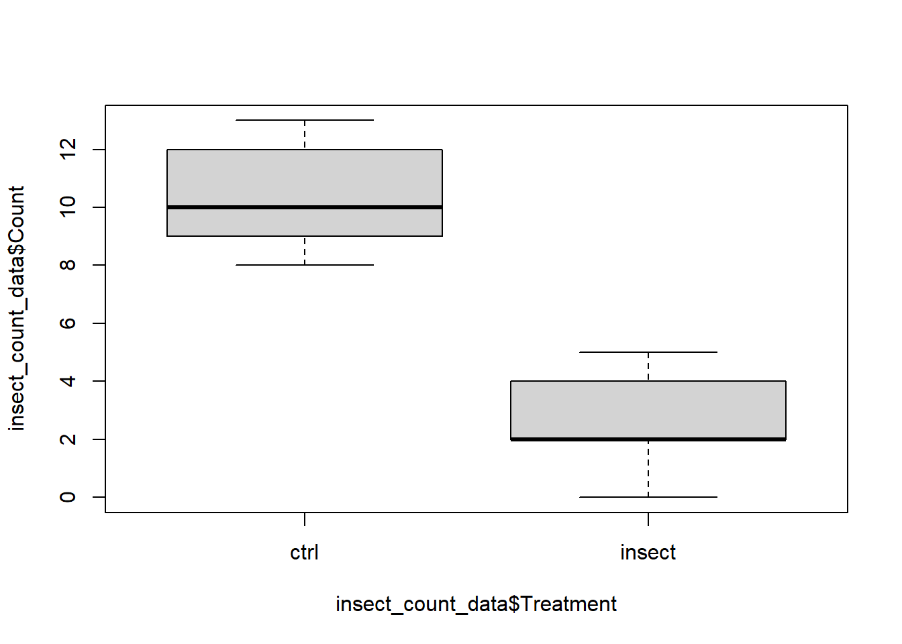
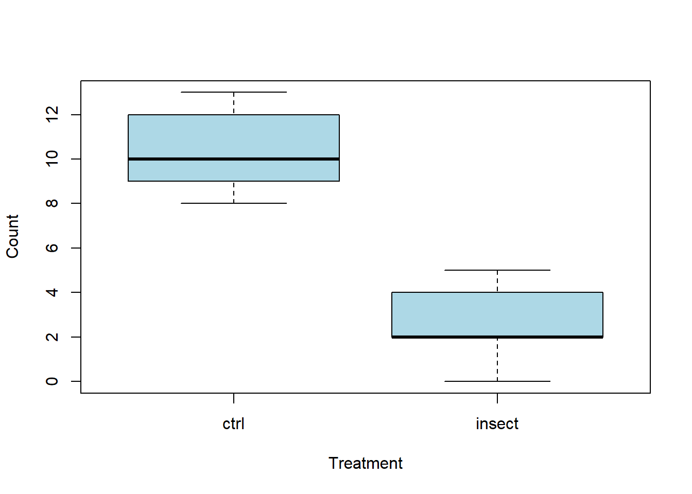

insect_count_data <-
data.frame(
Treatment = c('ctrl','ctrl','ctrl','ctrl','ctrl',
'ctrl','ctrl','ctrl','ctrl','ctrl',
'insect','insect','insect','insect','insect',
'insect','insect','insect','insect'),
Count = c(8, 9, 10, 9, 9, 12, 12, 12, 13, 10,
2, 5, 2, 0, 2, 3, 4, 4, 2)
)4 Using a data.frame for your data
In the previous chapter we stored and worked with our data in different vectors. However, we typically organize our data in a tabular data structure called a data.frame. This is a rectangular table-like structure containing columns of data, and where the rows are observations of related elements across the columns. In this chapter, we will repeat the analysis from Chapter 4 but with our data in a data.frame, and see how many statistical functions in R expect use of a data.frame as data input for the function.
Create a new R script and copy the code below to the script as you work through the section. Include comments where necessary.
4.1 Creating a data.frame
We will create a data.frame of the insect count data by entering the data manually. In practice, you would typically have your data stored elsewhere (e.g. Excel spreadsheet or other data file) and import that into R as a data.frame.
Here again are the counts of insects across the two experiment treatments.
Control treatment: 8, 9, 10, 9, 9, 12, 12, 12, 13, 10
Insecticide treatment: 2, 5, 2, 0, 2, 3, 4, 4, 2
We use the data.frame() function to create a new data.frame, and each argument is a column to be created in the data.frame for which we pass a vector of values. Note that breaking the code among different lines adds in clarity of the code.
Now we have a data.frame holding the data together in an object called insect_count_data. Printing it to the console shows the column and row nature of a data.frame.
insect_count_data Treatment Count
1 ctrl 8
2 ctrl 9
3 ctrl 10
4 ctrl 9
5 ctrl 9
6 ctrl 12
7 ctrl 12
8 ctrl 12
9 ctrl 13
10 ctrl 10
11 insect 2
12 insect 5
13 insect 2
14 insect 0
15 insect 2
16 insect 3
17 insect 4
18 insect 4
19 insect 2Using the str() function displays the structure of the data.frame. This data.frame contains 19 observations and 2 variables (columns). The column names are Treatment and Count. After the colum names we see chr and num, and these tell use the data types of the columns. R uses data types to understand what kind of information exists in each column.
Always check the properties of your data once it is in R. We will do it frequently through the book
str(insect_count_data)'data.frame': 19 obs. of 2 variables:
$ Treatment: chr "ctrl" "ctrl" "ctrl" "ctrl" ...
$ Count : num 8 9 10 9 9 12 12 12 13 10 ...We can access the data within specific columns using the $ symbol. This returns the values as vectors analogous to the vectors we create earlier in this chapter (X.X).
insect_count_data$Treatment [1] "ctrl" "ctrl" "ctrl" "ctrl" "ctrl" "ctrl" "ctrl" "ctrl"
[9] "ctrl" "ctrl" "insect" "insect" "insect" "insect" "insect" "insect"
[17] "insect" "insect" "insect"insect_count_data$Count [1] 8 9 10 9 9 12 12 12 13 10 2 5 2 0 2 3 4 4 24.1.1 Data visalisation
We will again create a boxplot again using the boxplot() function, but time using data.frame columns and a special R notation called a formula.
A formula, such as
y ~ group, is used whereyrepresents a numeric vector of data values, andgroupa grouping variable used to split the data. The first argument ofboxplot()is the formula.
When passing data in this formulaic way, the boxplot labels are automatically populated, meaning we do not need to use the names= argument. Notice that the x- and y-axis labels are derived from the code used in the formula.
boxplot(insect_count_data$Count ~ insect_count_data$Treatment)
Many R functions are designed to work with data.frames and include a data= argument to specify an input data.frame to use. In this approach, we provide the data.frame names to the data= argument and then refer to the columns directly by their names within the formula (not using the $). Notice that the default x- and y-axis titles are often more informative when using the formula and data argument. However, you can still customize them using the xlab= and ylab= arguments if desired. While we are here, lets change the colour using col=.
How do we know we can use
col=to change the colour? Type?boxplotin the console to see the help file.
boxplot(Count ~ Treatment, data = insect_count_data,
col = 'lightblue')
4.1.2 A statistical summaries
There are also functions that are helpful for summarizing data within a data.frame. The aggregate() function takes a formula as its first argument to describe a response and grouping structure, followed by the data= argument to specify the data.frame, and a FUN= argument to indicate the statistical function to apply. Note that the statistical function is provided without parentheses within the FUN= argument (e.g., FUN=mean, not FUN=mean()).
Again, you might notice that this involves a fair amount repeated typing. The output is more concise than the that from earlier in the chapter (X.X)
aggregate(Count ~ Treatment, data = insect_count_data, FUN = mean) Treatment Count
1 ctrl 10.400000
2 insect 2.666667aggregate(Count ~ Treatment, data = insect_count_data, FUN = sd) Treatment Count
1 ctrl 1.712698
2 insect 1.500000aggregate(Count ~ Treatment, data = insect_count_data, FUN = length) Treatment Count
1 ctrl 10
2 insect 94.1.3 Statistical test
The t.test() function is also designed to work with data.frames. Following the function structures above, here’s how you would apply it.
t.test(Count ~ Treatment, data = insect_count_data)
Welch Two Sample t-test
data: Count by Treatment
t = 10.491, df = 16.993, p-value = 7.664e-09
alternative hypothesis: true difference in means between group ctrl and group insect is not equal to 0
95 percent confidence interval:
6.178112 9.288555
sample estimates:
mean in group ctrl mean in group insect
10.400000 2.666667 4.1.4 What your script should look like
Having worked through the section and copying the code across to your own computer, your script should resemble the code below. I have only included the code that would go into the final analysis script, and removed some of the demonstration code. Save script to your computer. Well done! You just conducted an analysis using the most import data structure in R - the data.frame.
# Data input
insect_count_data <-
data.frame(
Treatment = c('ctrl','ctrl','ctrl','ctrl','ctrl',
'ctrl','ctrl','ctrl','ctrl','ctrl',
'insect','insect','insect','insect','insect',
'insect','insect','insect','insect'),
Count = c(8, 9, 10, 9, 9, 12, 12, 12, 13, 10,
2, 5, 2, 0, 2, 3, 4, 4, 2)
)
# Data check
insect_count_data
# There are 19 rows of data
# Treatment is character type
# Count is numeric type
str(insect_count_data)
# Data visualisation
boxplot(Count ~ Treatment, data = insect_count_data,
col = 'lightblue')
# Data summaries
aggregate(Count ~ Treatment, data = insect_count_data, FUN = mean)
aggregate(Count ~ Treatment, data = insect_count_data, FUN = sd)
aggregate(Count ~ Treatment, data = insect_count_data, FUN = length)
# Statistical test
t.test(Count ~ Treatment, data = insect_count_data)4.2 Summary
This chapter continued to provide a hands-on experience with R for basic data analysis. You learned another fundamental way to handle and organise data in R: using a data.frame — R’s preferred tabular data structure. You gained familiarity with R’s formula notation for efficient data manipulation and visualization within data.frames. This foundational understanding of R scripts and data structures prepares you fo r more advanced analyses, particularly for importing data from external files, which will be covered in the next chapter.